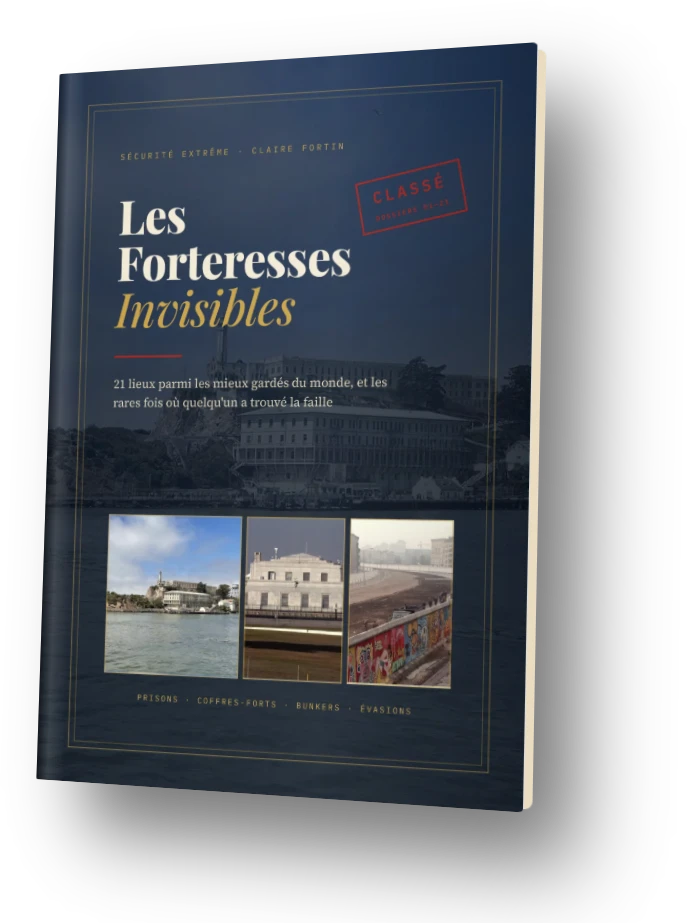
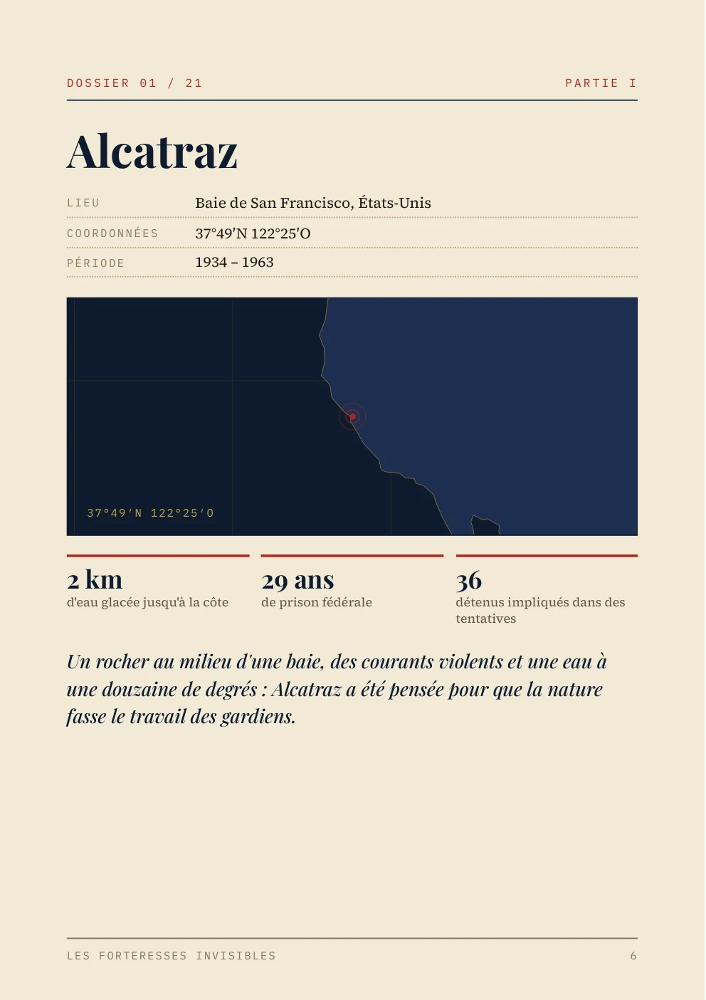
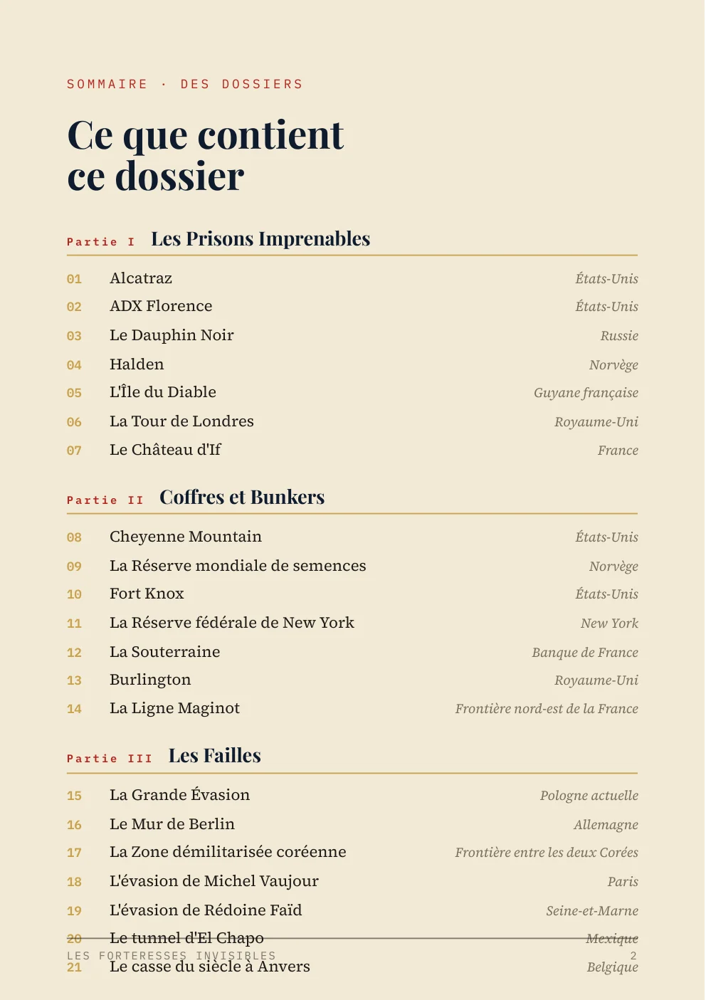
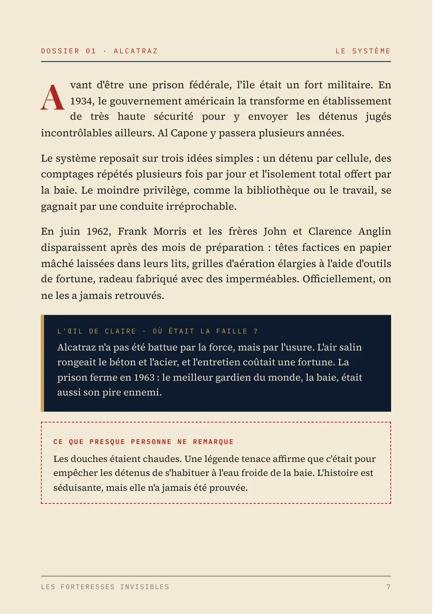
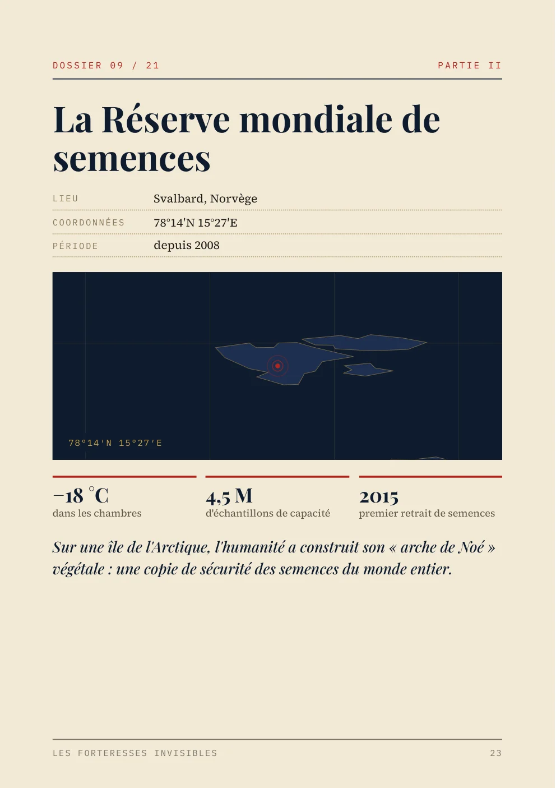
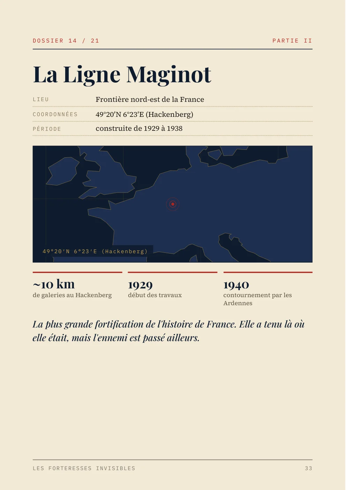
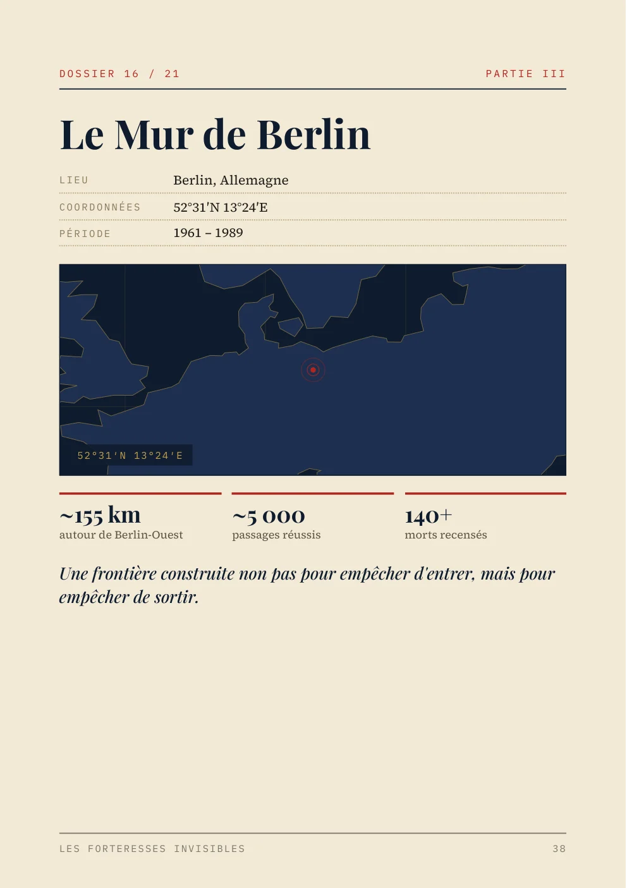
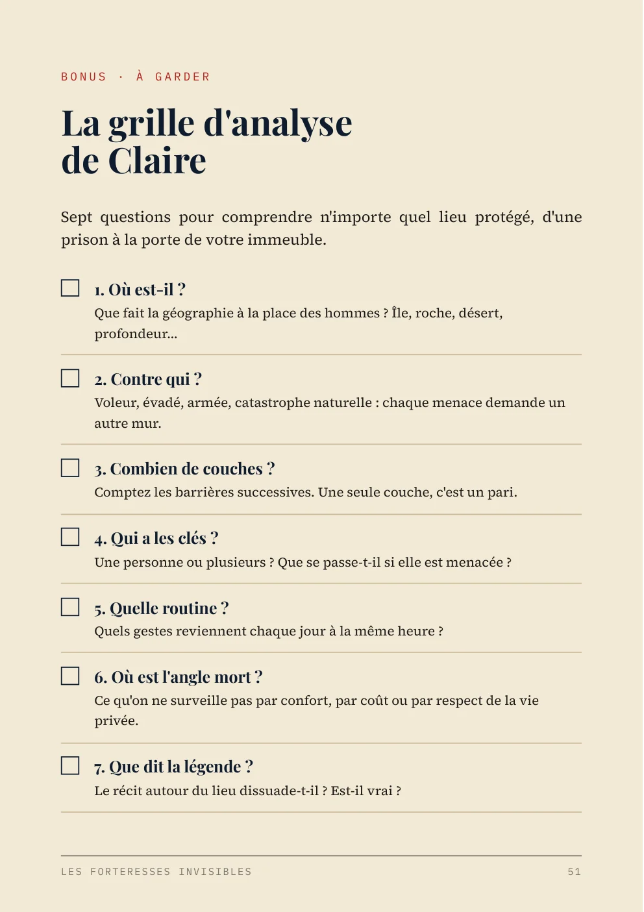

Prisons, coffres-forts, bunkers sous les montagnes : 21 lieux parmi les mieux gardés du monde, expliqués simplement. Et les rares fois où quelqu'un a trouvé la faille.

« Aucune forteresse n'est parfaite. La vraie question, c'est toujours : où était la faille ? »
SÉCURITÉ EXTRÊME · DOSSIERS 01—21Nous passons parfois à quelques mètres de ces lieux sans le savoir : l'or de la France dort à 27 mètres sous Paris, un bunker gouvernemental s'étend sous la campagne anglaise, une montagne du Colorado cache un centre de commandement posé sur des ressorts géants.
Dans la chaîne, Claire Fortin raconte ces lieux en quelques minutes. Ce livre prend le temps : pour chacun, comment fonctionne sa protection, ce que presque personne ne remarque, et où le système a cédé.
« Les évadés trouvent rarement une faille au cœur du système. Ils trouvent la zone que personne ne considérait comme sensible. »

Touchez les numéros sur la page : c'est ainsi que le livre présente chacun des 21 lieux.






Le paiement est traité par Hotmart. Dès qu'il est confirmé, vous recevez par e-mail l'accès au PDF, à télécharger tout de suite.
Non. Le livre est écrit pour tout le monde. Quand un terme technique apparaît, il est expliqué dans la même phrase, et un glossaire vous attend à la fin.
Non. Le livre réunit 21 lieux avec plus de détails : la fiche de chaque site, les chiffres clés, l'analyse de la faille et ce que presque personne ne remarque.
Elles viennent de sources publiques : institutions, archives, musées et presse. Quand une histoire relève de la légende ou de l'hypothèse, le texte le dit clairement. Les sources sont listées à la fin.
Oui. C'est un PDF qui s'ouvre sur téléphone, tablette, ordinateur ou liseuse, et qui s'imprime aussi.
Vous avez 15 jours de garantie. Il suffit de demander le remboursement directement sur Hotmart.
21 lieux, 53 pages, et la question qui change votre regard : où était la faille ?